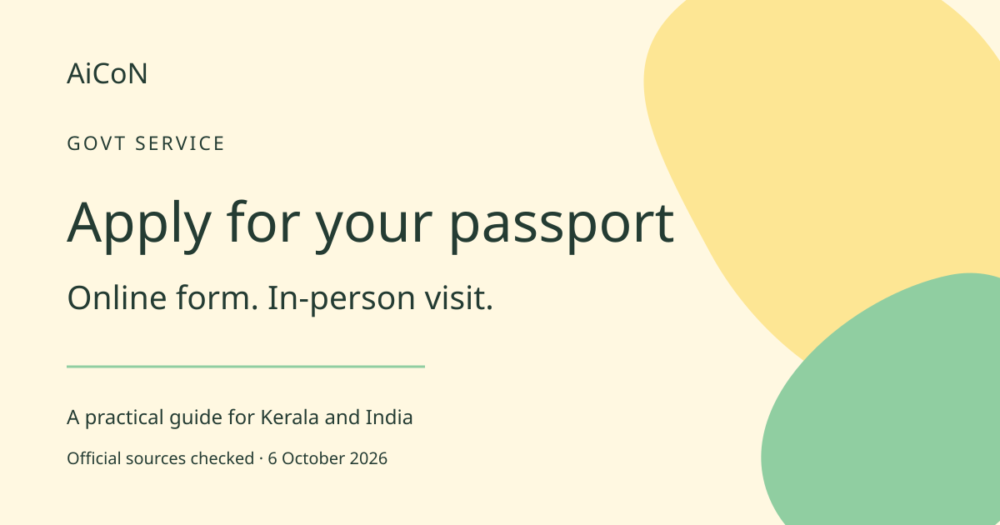

Passport Seva: how to apply online in India
Fill the application, pay and book online. A visit with original documents is still required. Check the right category and fee before you pay.

What is Passport Seva?
Passport Seva is the Ministry of External Affairs' official passport service. PSK means Passport Seva Kendra, a passport service centre. POPSK means Post Office Passport Seva Kendra. The portal provides self-application steps. Kerala readers planning study, work or travel abroad should begin with the correct category and document advice, rather than an agent's package.
Fresh passport or reissue?
Choose fresh issuance only if you have never held a passport of that category. If you previously held an ordinary passport, use reissue for an ordinary passport. Expiry does not make it a first application. Minors, lost passports, damaged passports and personal-detail changes can need different documents. Use the official document adviser. Do not assume Aadhaar alone covers every case.
How to apply, step by step
- Open passportindia.gov.in. Register and keep your login private. Read the document advice for your circumstances.
- Log in and choose Apply for Fresh Passport/Re-issue of Passport. Read the category carefully.
- Fill the form. Check names, dates and address against your records before submitting.
- Open View Saved/Submitted Applications, then Pay and Schedule Appointment. Online payment is required for booking. Read the exact fee and payment-screen charges.
- Save the Application Reference Number, or ARN, and appointment details. The official FAQ accepts the appointment SMS as proof; a printed receipt is no longer compulsory.
- Attend the booked centre with the required original documents. Follow any instructions for your case, including the photograph requirement for children below four.
- Track the application through the portal. Follow further instructions and police-verification requirements where applicable. Do not assume a fixed delivery date.
Current fees in INR
The official structure checked on 6 October 2026 lists ₹2,500 for a 36-page, ten-year ordinary fresh/reissue passport and ₹3,500 for 60 pages. The shorter-validity minor passport, 36 pages, is ₹1,750. Its listed validity is five years or until age 18, whichever is earlier. Tatkaal adds ₹2,500 for these categories. The basic-fee rebate is 10% for fresh applications by children aged eight or below and people above 60, not reissue. Lost or damaged replacements can cost more. Fees are non-refundable. The official calculator and your payment screen are the final checks.
India availability and limits
This is the domestic Indian passport route, including Kerala. Choose an appointment offered by the portal for your case. Online submission does not guarantee a same-day slot at your preferred centre. Applicants overseas should follow their Indian mission's route. Tatkaal is not permission to skip documents or eligibility checks.
AiCoN check and earlier-post correction
The September 28 headline said entirely online. That was too broad: official steps require an in-person visit with originals. The old post's fee amounts match the current fee page checked here. Older tables found elsewhere may differ. This guide is not a government publication.
Frequently asked questions
Is applying online free?
No. Self-application avoids an agent's extra fee, but official passport fees apply.
Can I transfer a paid fee to another application?
The FAQ says it cannot be transferred between ARNs. Check the form before paying.
What if payment succeeds but no slot is booked?
Check Track Payment Status, then use Schedule Appointment as the official FAQ instructs.
Sources: Official application steps. Fee structure. Fee calculator. Payment FAQ. Checked 6 October 2026.